The console: a journey day, and email-only invitations
SC-68 · console.smartclearance.com · epic SC-66, Workspace v1. Two options for where a client's new setting lives and how it is entered, built on the console itself; the invitation by email only is the same in both. Every company, person and figure is fictional.
The maintainer's decisions behind it:
- A journey clock that can be compressed: a client setting makes one journey day last 1 to 1,440 minutes (1,440 is real time), and the workspace's screens show journey time.
- Email and password for everyone: accounts are made by invitation on a default password and no email is ever sent, so an invitation is an email address only. Today the form asks for “Work email or mobile number”.
The invitation now
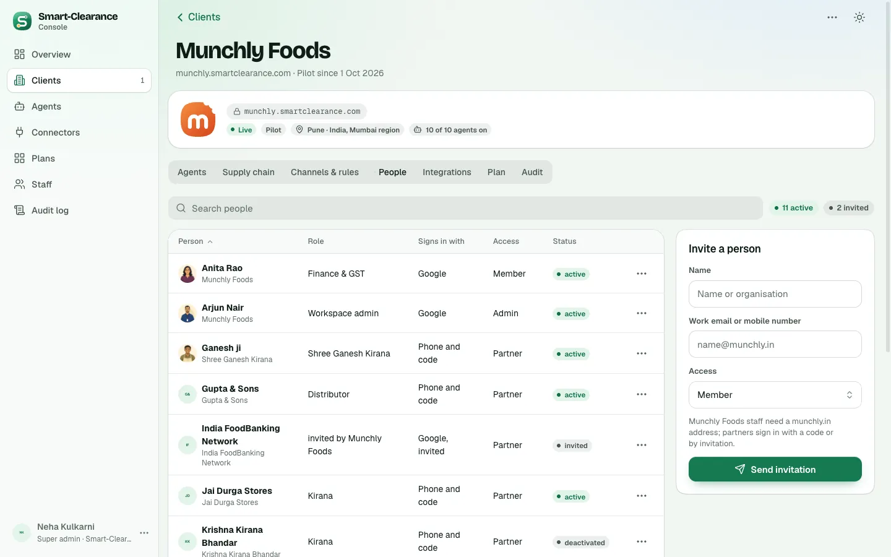
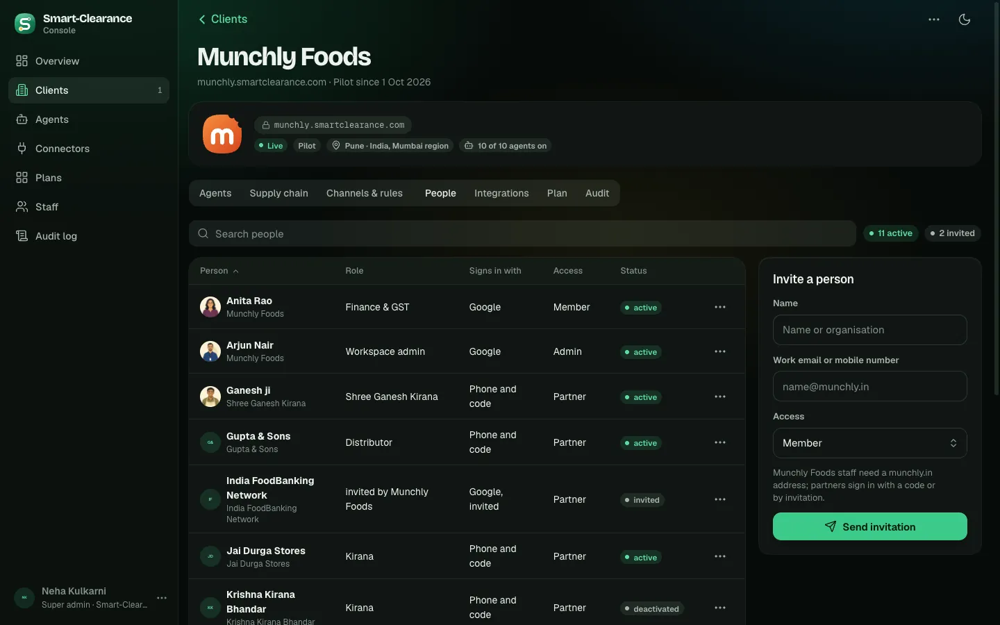
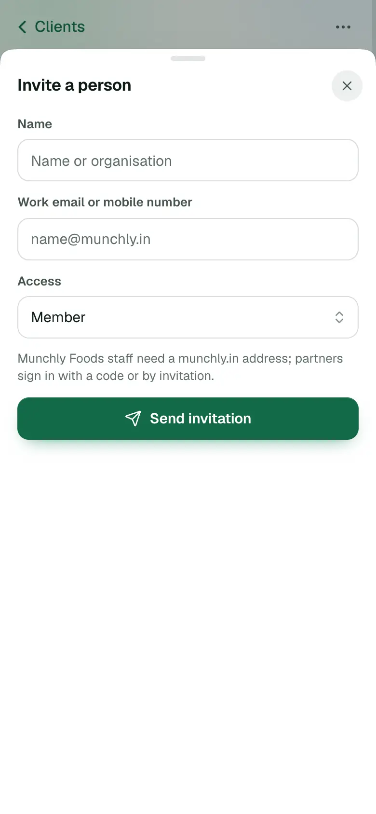
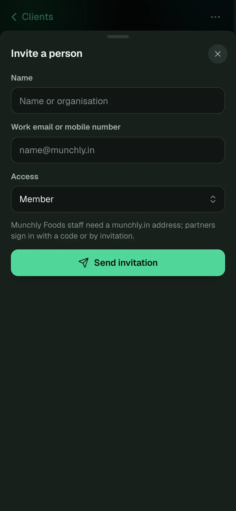
What both options share
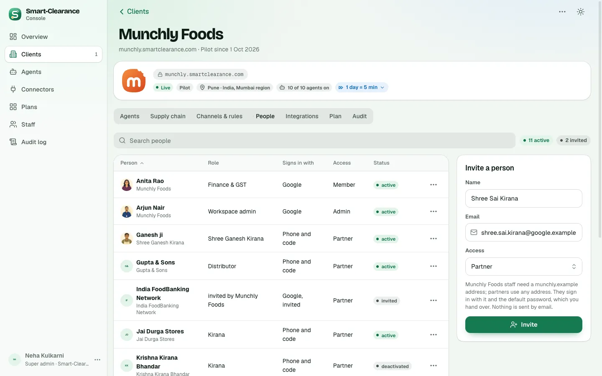
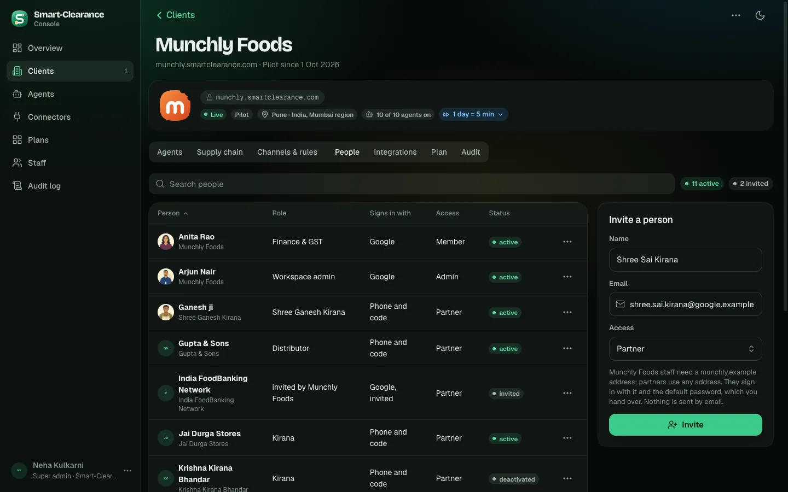
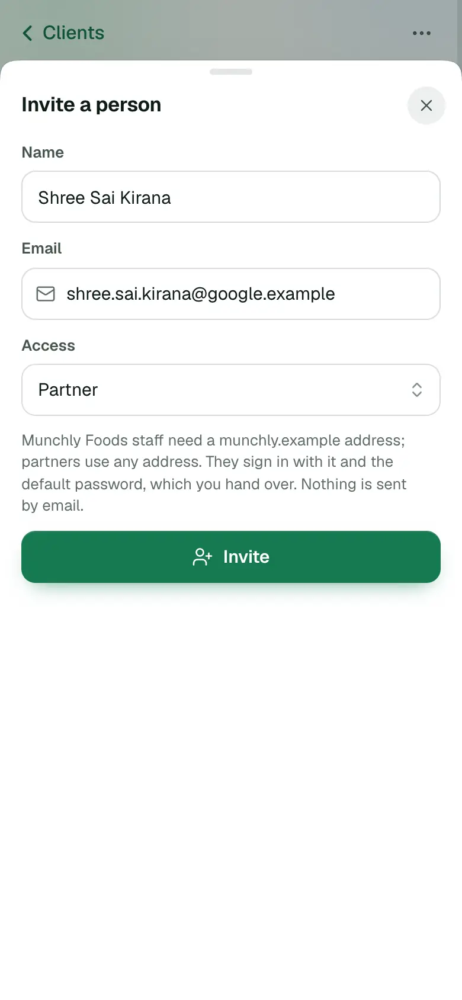
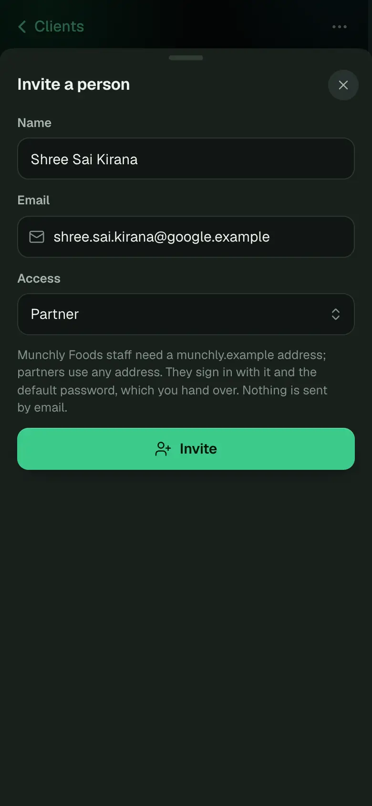
Option A · In the client's head, presets and a number
RecommendedA badge in the client's head, beside Live, the plan and the agents, says how fast the client's days run on every tab: 1 day = 5 min in the information blue, or Real time in grey. It opens a sheet with four presets and a number for anything else.
- Where
- The client page's head, on every tab. A client left on a short day is visible wherever staff are in its page.
- How it is entered
- Presets: Real time (1,440), Rehearsal (60), Demo (5), Fast (1); or any number of minutes. The readouts change as it is chosen, and a live client gets a note that short days give its partners less time to answer.
- Trade-offs
- One more badge in a full head on phones (it wraps under the others). The sheet is a second step to change it, which suits a setting changed rarely.
- What the build touches
- design3
console.jsx(ClientPage's head, a sheet),core/platform.js(the client's journeyDay); frontendClientPage.svelte, the contract'sClient.journeyDayand a route in backend-api.
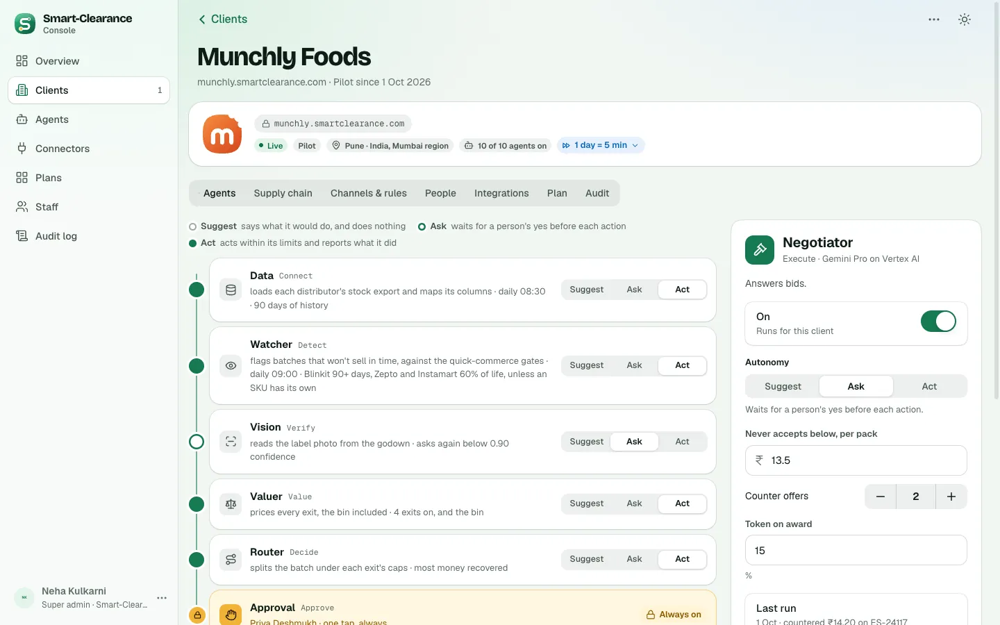
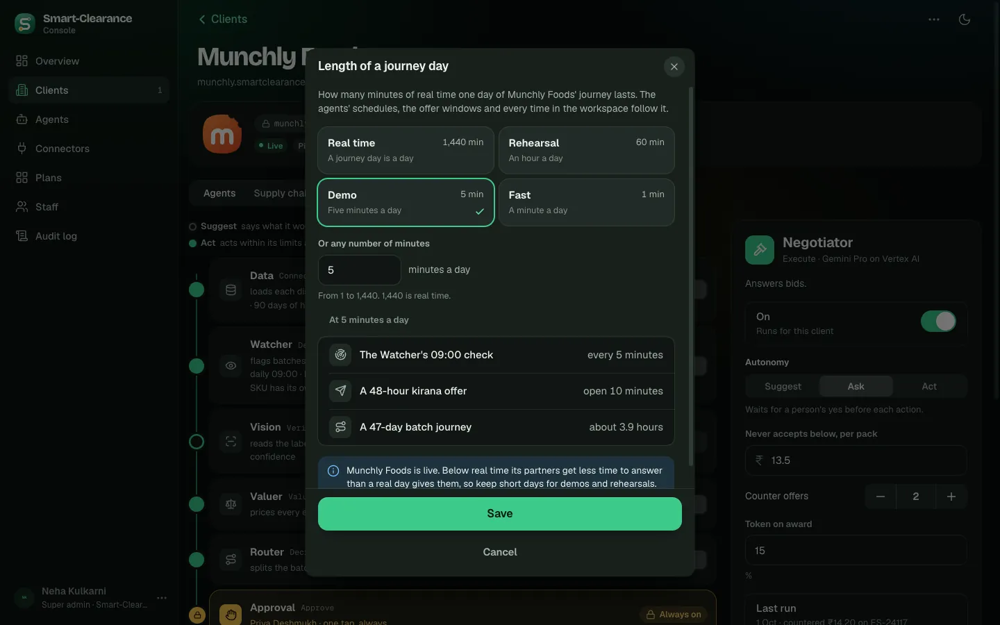
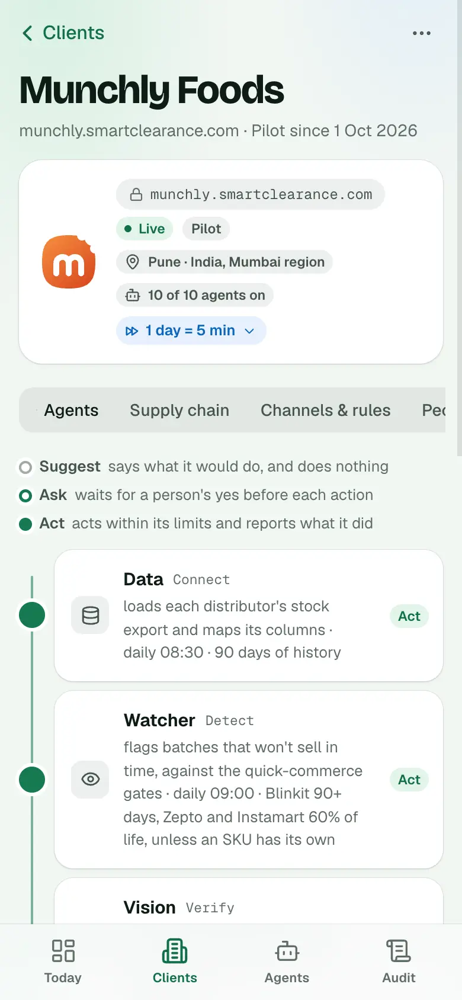
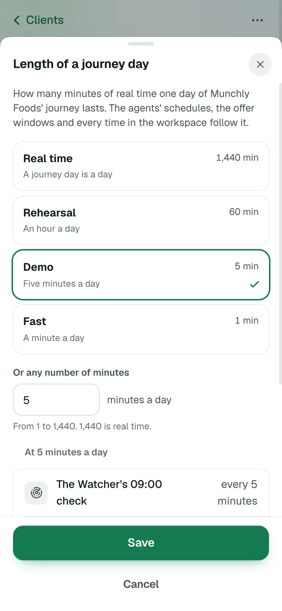
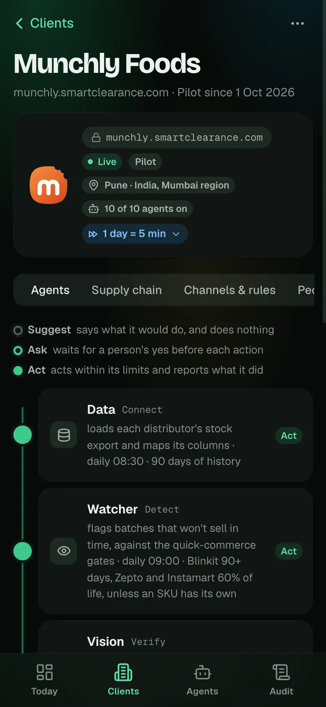
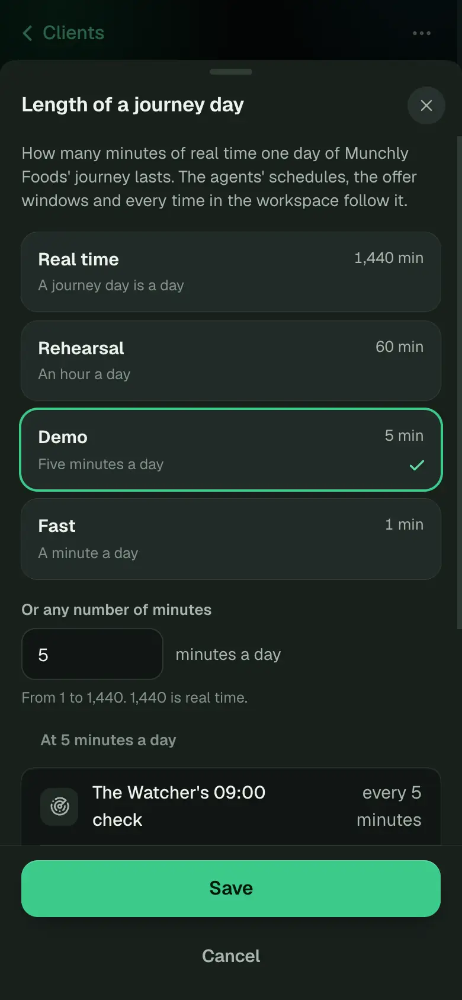
Option B · On the Agents tab, a number only
A card over the agents' pipeline: Length of a journey day, a minutes field with Save, and the three readouts under it. The clock sits with the agents it drives.
- Where
- The Agents tab, the client page's first tab, above the pipeline.
- How it is entered
- A number of minutes and Save; Reset appears once it changes. No presets: staff type 1,440 for real time.
- Trade-offs
- Out of sight on the other six tabs. A number alone invites typos (5 for 50); the readouts are the only check. Fast to change in a demo.
- What the build touches
- As A, with the card in AgentsTab instead of the head and the sheet.
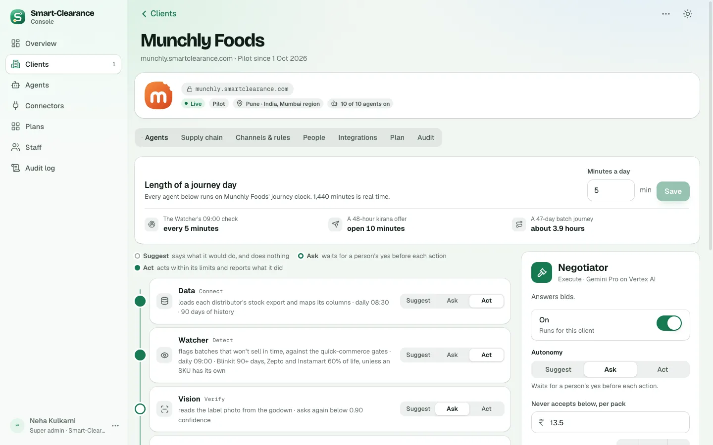
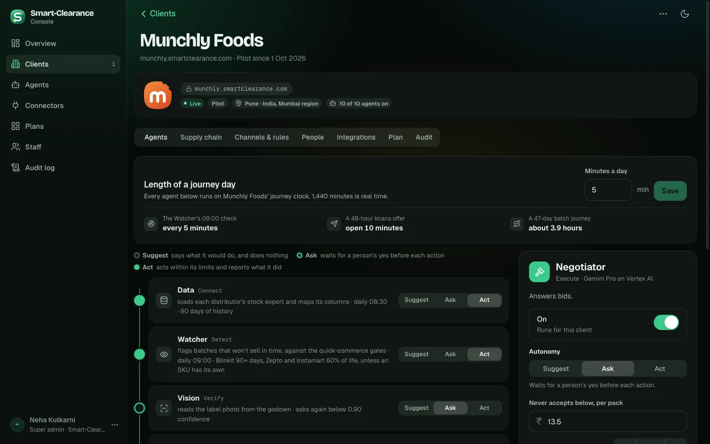
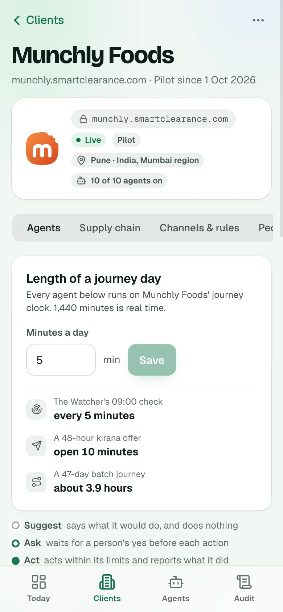
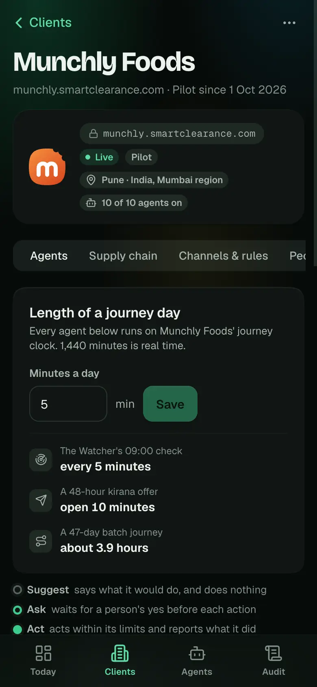
Recommended: A. A client left on a five-minute day would run its Watcher every five minutes and close its kirana offers in ten, so the setting should be visible on every tab, not only where the agents are. Presets make the usual values one tap and real time unmistakable, and the number still allows anything from 1 to 1,440.